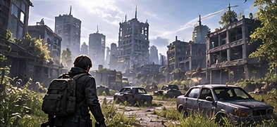
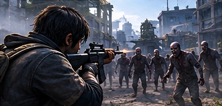
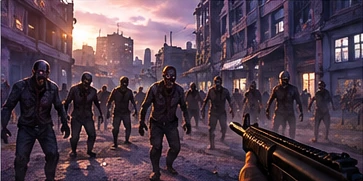
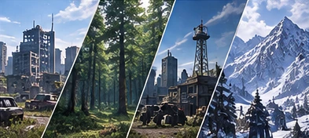
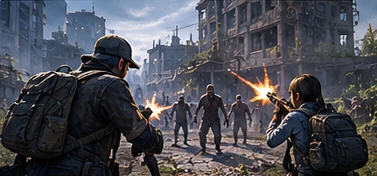
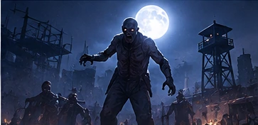

どんなゲーム？
ゾンビに支配された世界を自由に探索し、武器や食料を集めながら生き残るオープンワールド。
崩壊した世界で生き残れ。仲間と協力し、ゾンビだらけの世界を生き抜くサバイバルゲーム

ゾンビに支配された世界を自由に探索し、武器や食料を集めながら生き残るオープンワールド。

文明が崩壊した世界で生き残った青年。探索や戦闘を通して装備を強化し、生存能力を高めていく。

建物を探索して武器や食料を集める。弾薬には限りがあるため、戦うか逃げるかの判断が重要になる。

廃墟となった都市、危険な森、放棄された軍事施設など、場所によって手に入るアイテムや出現するゾンビが異なる。

友達と最大2人で協力できる。片方がゾンビを引きつけ、もう片方が攻撃するなど、役割分担が攻略の鍵になる。

昼と夜でゾンビの行動や強さが変化する。夜になると強力なゾンビが出現するため、昼のうちに準備する必要がある。